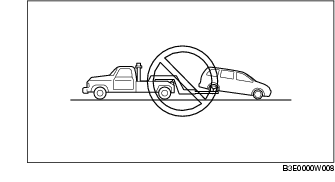
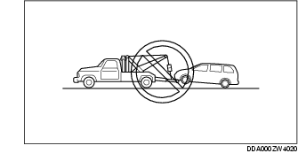
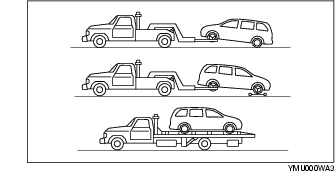

Towing
Towing
-
• Do not tow the vehicle pointed backward with driving wheels on the ground. This may cause internal damage to the transaxle.

-
• Do not tow with sling-type equipment. This could damage your vehicle. Use wheel-lift or flatbed equipment.

-
• Do not use the holes under the front and rear for towing. They are designed ONLY for tying down the vehicle when it is being transported.

• Proper lifting and towing are necessary to prevent damage to the vehicle. Government and local laws must be followed.
• A towed vehicle should have its front wheels off the ground. If excessive damage or other conditions prevent this, use wheel dollies.
• When towing with the rear wheels on the ground, release the parking brake.

Towing Hooks
- • The towing eyelet or hooks should be used only in an emergency (to get the vehicle out of a ditch or a snow bank, for example).
- • When using the towing eyelet or hooks, always pull the cable or chain in a straight direction with respect to the eyelet or hook. Apply no sideways force.
Front
1. Remove the towing eyelet and the lug wrench from the luggage compartment.
- • The cap cannot be completely removed. Do not use excessive force as it may damage the cap or scratch the painted bumper surface.
2. Wrap a screwdriver or similar tool with a soft cloth to prevent damage to the painted bumper and open the cap located on the front bumper.

3. Securely install the towing eyelet using the lug wrench.

- • If the towing eyelet is not securely tightened, it may loosen or disengage from the bumper when towing the vehicle. Make sure that the towing eyelet is securely tightened to the bumper.
4. Hook the towing rope to the towing eyelet.

Rear